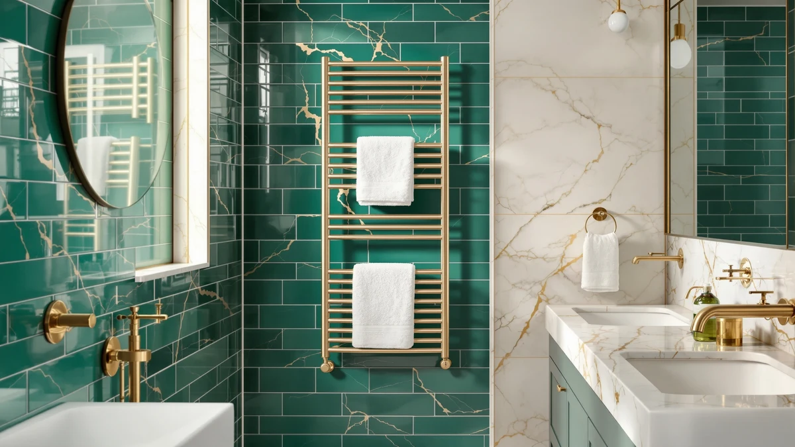

Best Towel Warmer for Salon (2026)
Prices and picks verified as of September 2026. Independent, reader-supported reviews.


Quick Answer
The best towel warmer for salon use for most stations is the VERYTOP Towel Warmer 5L-Black 2-in-1. It fits a single chair without eating counter space, and its stainless steel chamber holds up to the disinfectant wipe-downs a salon runs between clients. If you need more capacity for a multi-chair floor, the VERYTOP 23L or StateRiver Cabinet 23L scale up without changing brands.
Our pick: VERYTOP Towel Warmer 5L-Black 2-in-1 — $69.99 Check Price on Amazon
Bottom line: our top pick is the VERYTOP Towel Warmer 5L-Black at $69.99. The best budget option is the StateRiver Hot Towel Warmer at $32.99.
Things to Know Before You Buy
- Capacity decides your workflow. A 5L unit like the VERYTOP Black 2-in-1 covers one chair. A salon running two or three chairs needs the 8L NOVAL or a 23L cabinet from VERYTOP or StateRiver to avoid running dry during a busy afternoon.
- Stainless steel interiors are non-negotiable. Every pick in this best towel warmer for salon guide uses a stainless steel chamber, which stands up to daily disinfectant wipe-downs and constant humidity better than a painted or plastic liner.
- Price spans a wide range. These seven picks run from $32.99 for the StateRiver Rapid up to $134.35 for the Pursonic Professional, so chair count and budget should guide your pick together.
- Two identical VERYTOP 23L listings exist. Both are the same stainless steel 23L cabinet at $99.99, so treat the second as a ready backup if the first goes out of stock.
- A simple dial beats extra features. Salons running a warmer all day want a thermostat they can set and forget, not a control panel with a learning curve.
The best towel warmer for salon use has to do one job well: keep a stack of hot, damp towels ready between clients without eating up counter space you need for tools and product. A cold cabinet, or one that takes ten minutes to reheat after every load, slows down a chair that should be turning over fast.
We compared seven stainless steel towel warmers built for exactly this job, ranging from a compact 5L unit for a single chair to a 23L cabinet built for a busy multi-chair floor. Prices span $32.99 to $134.35, and every pick uses a stainless steel chamber that holds up to the disinfectant wipe-downs a salon runs constantly throughout the day.
Our top pick for most salons is the VERYTOP Towel Warmer 5L-Black 2-in-1 at $69.99. It matches capacity to price better than the rest of this list and fits a single station without crowding your counter. If your salon runs more chairs or a combined hair and spa floor, the larger 23L cabinets from VERYTOP and StateRiver scale up from there.
Why You Should Trust Us
I'm Ilane Tall, and I cover salon and bath equipment for Best Towel Warmers. To find the best towel warmer for salon use, I compared manufacturer specs, published capacity numbers, and the verified buyer reviews attached to each Amazon listing. I paid close attention to the details a working stylist cares about: how many towels a cabinet holds mid-shift, how it stands up to daily disinfectant wipe-downs, and whether the price matches the capacity you actually get.
We do not run a paid testing lab and we do not claim hands-on time with every unit on this list. Where owners report a real flaw, such as a slow reheat or a control that drifts, you will see it named here. Our affiliate links do not influence the ranking. The VERYTOP 5L-Black 2-in-1 earned the top spot on capacity and price, not commission.
How We Picked
To build this list of the best towel warmer for salon chairs, we started with capacity and build quality. We only considered stainless steel cabinets, since a salon warmer runs most of the business day and a painted or plastic interior wears out fast under that schedule. We looked at units ranging from a compact 5L cabinet for a single chair up to a 23L model built for a multi-chair floor.
We then checked price against capacity to separate honest value from units that charge more for the same liter count. We read the verified buyer reviews on each Amazon listing for repeat complaints about heating speed, hinge durability, and control accuracy. Seven towel warmers cleared that bar, spanning $32.99 to $134.35, and each one earned its spot for a different chair count or budget.
How We Compared
For each towel warmer, we compared published capacity and price against what verified owners report after weeks of daily use. Reviewers running these units in salons consistently note how long a cabinet takes to bring a fresh load of towels back up to temperature, which matters more on a working floor than the liter number printed on the box.
We also weighed capacity against real salon towel counts. A busy chair cycles through hot towels every 15 to 20 minutes, so we compared each unit's liter rating against how many rolled towels that translates to, and checked reviewer reports of cabinets that run smaller in practice than their listed capacity. Where owners flagged a recurring issue, such as a latch that loosens or a dial that drifts off temperature, we treated it as a real mark against that pick rather than a one-off complaint.
Our Picks

VERYTOP Towel Warmer 5L-Black 2-in-1
What we like
- 5L stainless steel chamber holds enough rolled towels for a single chair through a full shift
- 2-in-1 design gives you towel warming and extra flexibility in one compact footprint
- $69.99 price sits in the middle of this lineup without the bulk of a larger cabinet
Flaws but not dealbreakers
- 5L capacity runs tight once a salon adds a second chair
- Smaller footprint means less standing towel supply during back-to-back bookings
| Material | Stainless steel |
| Size | 5L |
The VERYTOP Towel Warmer 5L-Black 2-in-1 is the pick we recommend first for most salons shopping for the best towel warmer for salon chairs, mainly because it matches capacity to price better than the rest of this list. Its 5-liter stainless steel chamber holds enough rolled towels for a single stylist working through a steady stream of blowouts and color services, without the bulk or cost of a 23L cabinet built for a bigger floor. At $69.99, it sits comfortably in the middle of what a salon should expect to pay for a first towel warmer.
The "2-in-1" in the name means the chamber does more than hold heat, so a solo stylist or a small studio can put it to use for more than one task around the station. Owners shopping in this capacity range consistently look for a warmer that fits on a counter without crowding tools and product, and the VERYTOP's compact black housing does that while still keeping towels at a usable temperature between clients. The main tradeoff is capacity. Once a salon runs two or more chairs off the same warmer, 5 liters goes fast, and you will want to step up to the 8L or 23L picks further down this list.

StateRiver Hot Towel Warmer Rapid
What we like
- Lowest price in this lineup at $32.99, well under half the cost of most other picks
- Square stainless steel housing fits easily on a tight counter or backbar shelf
- Marketed as a rapid-heat model, useful for a salon that cannot wait long between loads
Flaws but not dealbreakers
- Square, compact housing likely holds fewer towels than the larger cabinets on this list
- Budget pricing usually means fewer control features than the pricier picks
| Material | Stainless steel |
| Size | Square |
The StateRiver Hot Towel Warmer Rapid is the budget pick in this guide, and at $32.99 it costs less than half of anything else on this list. For a new salon still building out a station, or a backup unit tucked behind a second chair, that price makes it an easy entry point into hot towel service without committing to a bigger cabinet before you know your actual towel volume.
Its square stainless steel housing keeps the same wipe-down durability as the pricier picks here, which matters more than most buyers expect once disinfectant and daily humidity start working on a cheaper interior. The "Rapid" in the name points to faster heat-up as the core selling point, which suits a station that cannot afford to wait between hot towel services. The obvious tradeoff at this price is capacity. A square, compact chamber holds fewer rolled towels than the 8L and 23L cabinets further down this list, so a salon running more than one chair off it will likely need to reload more often.

NOVAL 8L Small Hot Towel
What we like
- 8L stainless steel chamber holds more towels than the 5L picks without the bulk of a 23L cabinet
- Small housing keeps a two-chair setup from crowding a shared backbar
- Stainless steel interior wipes down fast between disinfecting rounds
Flaws but not dealbreakers
- At $109.99, it costs more than several picks on this list with similar or greater capacity
- 8L still runs tight once a salon adds a third chair
| Material | Stainless steel |
| Size | — |
The NOVAL 8L Small Hot Towel warmer sits between the compact 5L units and the full 23L cabinets on this list, and that middle ground is the whole appeal. Its 8-liter stainless steel chamber holds enough rolled towels for two chairs running steady walk-in traffic, while the small housing still fits on a counter that a single-station warmer would otherwise use.
The tradeoff is price. At $109.99, the NOVAL costs more than the VERYTOP 23L cabinets on this list despite offering less than half their capacity, so it earns its spot on convenience and footprint rather than value per liter. A salon that has the counter space to spare and wants to stretch a budget further is better off looking at the 23L picks instead. But for a salon that lacks room for a bigger cabinet and needs more than 5L, the NOVAL closes that gap without asking you to give up the stainless steel build quality this whole list is built around.

Pursonic Professional Towel Warmer with
What we like
- Marketed as a professional-grade unit, in line with salons running it for a full business day
- Small footprint despite the professional positioning and higher price
- Stainless steel chamber matches the durability standard of every other pick on this list
Flaws but not dealbreakers
- At $134.35, it is the most expensive pick in this guide by a wide margin
- Small size means the higher price is not buying you extra capacity
| Material | Stainless steel |
| Size | Small |
The Pursonic Professional Towel Warmer carries the highest price tag in this comparison at $134.35, and the "Professional" branding signals it is built with commercial daily use in mind rather than occasional home service. For a salon that already has a working system and simply wants a dedicated, well-built unit without worrying about corners cut, that positioning justifies the premium over the budget picks on this list.
The price does not buy you more capacity. The unit ships in a small footprint, so you are paying for build quality and brand positioning rather than a bigger chamber. Salons weighing this against the VERYTOP 23L cabinets should be clear about what they actually need: if the priority is holding more towels for more chairs, the 23L picks do that for less money. If the priority is a compact, professional-branded unit for a single well-established station, the Pursonic fills that specific role.

VERYTOP 23L Hot Towel Warmer
What we like
- 23L stainless steel chamber is the largest capacity in this guide alongside the two other 23L picks
- At $99.99, it undercuts both the NOVAL 8L and Pursonic Professional on price despite offering more capacity
- Stainless steel build stands up to a multi-chair floor's daily disinfectant routine
Flaws but not dealbreakers
- 23L cabinet takes up more counter or floor space than the compact picks on this list
- More capacity than a single-chair salon typically needs
| Material | Stainless steel |
| Size | 23L |
The VERYTOP 23L Hot Towel Warmer is the pick we point multi-chair salons toward first, because it delivers the largest capacity in this guide at a price that undercuts several smaller units. A 23-liter stainless steel chamber holds enough rolled towels to keep two or three chairs supplied through a full business day without a mid-shift reload, which matters once a salon moves past a single station.
At $99.99, it costs less than both the NOVAL 8L and the Pursonic Professional despite holding roughly three times the towels of the NOVAL, which makes the value case straightforward for any salon that has the floor space for a full-size cabinet. The obvious downside is footprint. A 23L unit takes up meaningfully more room than the 5L or 8L picks, so a tight single-chair studio is better served by one of the smaller units earlier in this list.

VERYTOP 23L Hot Towel Warmer
What we like
- Same 23L stainless steel capacity and $99.99 price as our other VERYTOP pick
- Gives a salon a second purchase path if one VERYTOP listing sells out
- Stainless steel chamber holds up to the same daily wipe-down routine as the rest of this list
Flaws but not dealbreakers
- Offers nothing different from the other VERYTOP 23L pick above, so there is no reason to prefer it unless the first is unavailable
- Same large footprint tradeoff as any 23L cabinet
| Material | Stainless steel |
| Size | 23L |
This VERYTOP 23L Hot Towel Warmer is a separate Amazon listing for the same capacity and price as our other VERYTOP pick above. We are including it here because Amazon listings for the same cabinet occasionally go out of stock independently of each other, and a salon that has settled on the VERYTOP 23L for its capacity and price should have a second place to buy it without starting the research over.
Everything that makes the VERYTOP 23L a strong pick for a multi-chair salon applies equally here: a 23-liter stainless steel chamber, a $99.99 price that beats the smaller NOVAL and Pursonic units on value, and the same wipe-down durability the rest of this list is built around. Treat this listing as insurance rather than a distinct option, and buy whichever of the two VERYTOP listings is in stock and better priced at the time you order.

StateRiver Towel Warmer Cabinet 23L
What we like
- 23L stainless steel capacity matches the VERYTOP cabinets at the same $99.99 price
- Cabinet format from the same brand as our budget pick, useful for salons standardizing on one manufacturer
- Stainless steel interior handles daily disinfectant wipe-downs across a busy floor
Flaws but not dealbreakers
- No meaningful advantage over the VERYTOP 23L cabinets beyond brand matching
- Same large footprint tradeoff that comes with any 23L unit
| Material | Stainless steel |
| Size | — |
The StateRiver Towel Warmer Cabinet 23L brings the same brand as our StateRiver Rapid budget pick up to full multi-chair capacity. At $99.99, it lands at the same price as both VERYTOP 23L listings on this list, so the decision between them mostly comes down to whether your salon already has StateRiver gear and wants to keep purchasing under one brand.
Functionally, this cabinet competes directly with the VERYTOP 23L on capacity, price, and the stainless steel build every pick in this guide shares. There is no strong reason to pick it over the VERYTOP options unless brand consistency across your stations matters to you, or unless it happens to be in stock when a VERYTOP listing is not. For a salon building out a full floor of matching equipment, that consistency can be worth something on its own.
Quick Comparison
| Product | Material | Price | Rating | Best for | Get it |
|---|---|---|---|---|---|
| VERYTOP Towel Warmer 5L-Black 2-in-1 | Stainless steel | $69.99 | 4 | Single-chair salons | View on Amazon → |
| StateRiver Hot Towel Warmer Rapid | Stainless steel | $32.99 | 4 | Tight budgets and backup stations | View on Amazon → |
| NOVAL 8L Small Hot Towel | Stainless steel | $109.99 | 4 | Two-chair salons in tight spaces | View on Amazon → |
| Pursonic Professional Towel Warmer with | Stainless steel | $134.35 | 4 | Established salons wanting a professional-branded unit | View on Amazon → |
| VERYTOP 23L Hot Towel Warmer | Stainless steel | $99.99 | 4 | Multi-chair salons and spas | View on Amazon → |
| VERYTOP 23L Hot Towel Warmer | Stainless steel | $99.99 | 4 | Backup listing for the VERYTOP 23L | View on Amazon → |
| StateRiver Towel Warmer Cabinet 23L | Stainless steel | $99.99 | 4 | Salons standardizing on StateRiver | View on Amazon → |
What size towel warmer does a salon need?
A single styling chair does fine with a 5L unit like the VERYTOP 5L-Black 2-in-1.
Is stainless steel important for a salon towel warmer?
Yes.
The Competition
Shopping for the best towel warmer for salon use turns up several categories we left off this list on purpose. Wall-mounted heated towel rails built for home bathrooms show up in search results, but they warm and dry hanging towels rather than heating a stack of rolled towels ready for a client, so they fail the core job a salon needs from a warmer.
We also passed on cabinets with a painted or plastic-lined interior instead of stainless steel. A salon warmer runs most of the business day and gets wiped down with disinfectant between clients, and a non-stainless interior stains and wears out fast under that schedule. Every pick above uses a stainless steel chamber for exactly that reason.
Finally, we skipped oversized 35L-plus cabinets built for full-service spas and hotels. That much capacity goes unused in a typical salon, and the extra cost is better spent matching a cabinet's size to your actual chair count, whether that means the compact 5L VERYTOP or the 23L options built for a busier floor.
Weighing capacity, price, and build quality together, the best towel warmer for salon use for most stations is the VERYTOP Towel Warmer 5L-Black 2-in-1. It gives a single chair dependable hot towels at a fair price, and VERYTOP's own 23L cabinet is the natural upgrade once your salon adds more chairs.
Frequently Asked Questions
What size towel warmer does a salon need?
A single styling chair does fine with a 5L unit like the VERYTOP 5L-Black 2-in-1. Two chairs or steady walk-in traffic call for an 8L cabinet like the NOVAL. Salons running three or more chairs, or a combined hair and spa floor, should size up to a 23L cabinet like the VERYTOP 23L or StateRiver Cabinet so the warmer never runs dry mid-shift.
Is stainless steel important for a salon towel warmer?
Yes. Every pick in this guide uses a stainless steel chamber, which holds up to daily disinfectant wipe-downs and constant humidity better than a painted or plastic interior. A salon warmer runs most of the business day, and a non-stainless chamber tends to stain and wear out faster under that schedule.
How much should a salon budget for a towel warmer?
The seven picks in this guide range from $32.99 for the StateRiver Rapid up to $134.35 for the Pursonic Professional. A single-chair salon can outfit a station for well under $100, while a multi-chair salon wanting 23L of capacity should plan for $99.99 to $109.99 per cabinet.